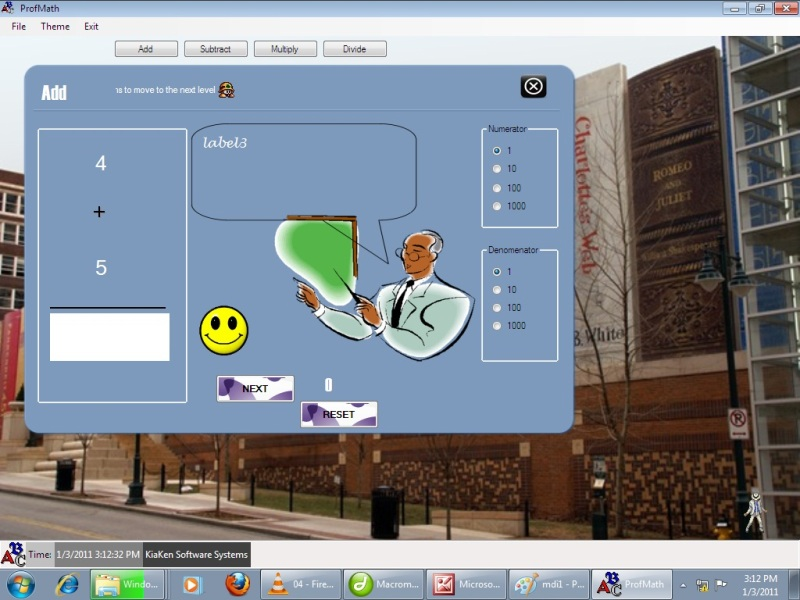

user manual
| Chapter |  |
Inside ProfMath
ProfMath has colorful windows and prompts that facilitate interaction between you and the program. Note that the background is a picture, you can insert your own background picture through the Theme option.
This is the start up page of the program.

This is the general format of all windows.
Features
Choose level
Choose whether questions presented will be in ones, tens, hundreds or thousands.Reset
Restarts the whole program with the original settings.Decimal
Note that only the Division form has this option. Choose the number of decimal points you will enter your result in.Also note that in the Division Form you can give your answer in either whole number (with its remainder) or decimal form, where you can give in 2 decimals or 3 decimals.
<< Previous